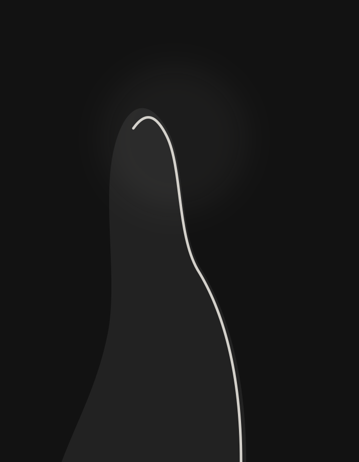
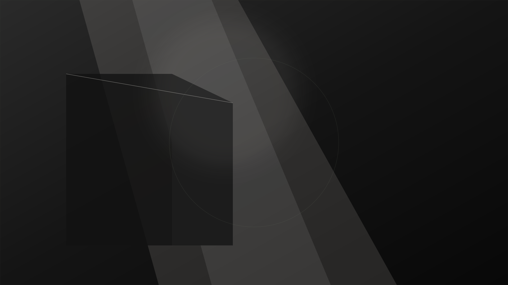
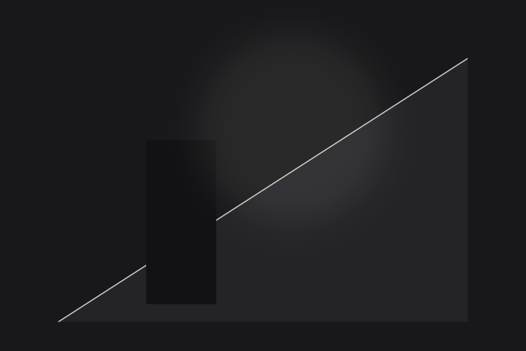

Το φως γίνεται ιστορία.
Πρόσωπα, τοπία και μικρές στιγμές μέσα από μια επιμελημένη φωτογραφική ματιά. Ενδεικτικές συλλογές για ένα image-first portfolio concept.
Επιμελημένες Συλλογές
Επιλογή Έργων
Εξερευνήστε τις θεματικές ενότητες. Επιλέξτε οποιαδήποτε εικόνα για προβολή πλήρους οθόνης με διαδραστικό lightbox.


Ειδικό Αφιέρωμα
Μικρές ιστορίες φωτός
Δύο μελέτες που αναδεικνύουν τη δύναμη της απλότητας και της αρχιτεκτονικής συμμετρίας.

Η γεωμετρία της ηρεμίας
Η αλληλεπίδραση φυσικού φωτός και καθαρών όγκων δημιουργεί ένα σκηνικό όπου ο χρόνος μοιάζει να επιβραδύνει.
Ανακλάσεις του απογεύματος
Ζεστές αποχρώσεις που συναντούν την αυστηρότητα των αδρών υλικών, μετατρέποντας τη στιγμή σε οπτική αφήγηση.
Η Φιλοσοφία
Παρατηρώ το φως. Ακολουθώ τη στιγμή.
Το FOS PHOTOGRAPHY είναι ένα portfolio concept για την παρουσίαση φωτογραφικών συλλογών. Οι ενδεικτικές εικόνες εξυπηρετούν τη σύνθεση και δεν παρουσιάζονται ως έργα πραγματικού φωτογράφου ή ως προσωπικές λήψεις του VGES Online.
Η προσέγγιση βασίζεται στην ανάδειξη του αρνητικού χώρου, στη φυσικότητα της έκφρασης και στον σεβασμό των υφών. Κάθε κάδρο δομείται με στόχο την αφαίρεση του περιττού, αφήνοντας την ουσία να επικοινωνήσει με τον θεατή.
Θεματικές Ενότητες
Θεματικές Ενότητες
Φωτογραφικές Υπηρεσίες
Ενδεικτική κατηγοριοποίηση υπηρεσιών και δημιουργικής κατεύθυνσης για ένα ολοκληρωμένο studio portfolio.
01 / PORTRAITS
Πορτρέτα
Ενδεικτική παρουσίαση προσώπων με έμφαση στο φυσικό φως, στην αυθεντική έκφραση και στον διάλογο φωτός και σκιάς.
02 / EDITORIAL
Editorial εικόνες
Οπτικές αφηγήσεις που συνδέουν πρόσωπα, χώρους και λεπτομέρειες σε ενιαία αισθητικά projects με ταυτότητα.
03 / BRANDING
Brand stories
Σχεδιαστικό παράδειγμα συλλογής εικόνων για την παρουσίαση μιας σύγχρονης επαγγελματικής ταυτότητας και artisanal προϊόντων.
Δοκιμή Επικοινωνίας
Δες πώς θα λειτουργούσε η επικοινωνία
Η παρακάτω φόρμα είναι μια τοπική δοκιμή της εμπειρίας χρήσης. Μην εισάγεις πραγματικά προσωπικά ή ευαίσθητα δεδομένα.
Συχνές Ερωτήσεις (FAQ)
Είναι οι εικόνες πραγματικές αναθέσεις;
Όχι. Οι συλλογές είναι ενδεικτικές και η προέλευση κάθε εικόνας καταγράφεται στα credits.
Μπορώ να ζητήσω φωτογράφιση;
Η παρούσα φόρμα είναι μόνο τοπική δοκιμή σχεδιασμού και δεν στέλνει μήνυμα.